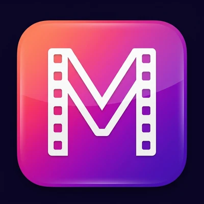
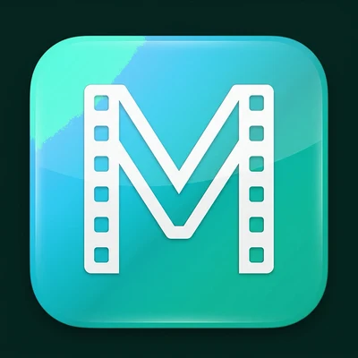

The rebrand, in August 2026

Pink, from #EC407A: the brand ramp, tone 10 to 99

Teal, from #14B8A6: the same steps
Every colour in the app is one step of one of six ramps. Light and dark themes pick different steps.
Main accent (tone 40) on white. It moved a little and still clears the 4.5 : 1 that text needs.
Dark-theme accent (tone 80) on black. Almost no change.
Ramp values from the colour code before and after the change. Contrast ratios worked out from those values.